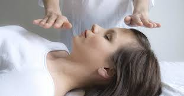

Claude Maire
Les soins énergétiques en cabinet ou à distance apportent détente et ressource pour les personnes stressées, anxieuses. Dans le retour vers la santé, il est essentiel de retrouver la sérénité et un sommeil réparateur en complément des soins traditionnels.
.
Alain Mounier
Je suis énergéticien et enseignant Reiki depuis 15 ans. A l’âge de 18 ans je me suis profondément questionné sur les relations entre le corps physique et les causes émotionnelles.
Beaucoup de nos souffrances et de maux, quels qu’il soient proviennent d’un déséquilibre de nos émotions qui ont un impact sur nos chakras, nos différents corps, nos méridiens et tous nos organes.
Le travail énergétique va influer sur votre émotionnel et l’aider à se rééquilibrer et vous permettre aussi de retrouver votre chemin sur la connaissance de soi, qui est le but essentiel de votre guérison.
J’ai également travaillé avec plusieurs guérisseurs, magnétiseurs, radiesthésistes, rebouteux, ostéopathes, géobiologues qui m’ont transmis un savoir faire et une expérience qui ne se trouve pas dans les livres! J’utilise aujourd’hui toutes ces techniques et outils énergétiques lors de mes soins dans une vision globale de l’être.
Ces soins sont complémentaires de la médecine traditionnelle et ne se substituent dans aucun cas au traitement et avis délivré par votre médecin ou tout autre médecin professionnel conventionné.
Les soins de Claude
La restructuration du corps énergétique consiste à redonner à "notre maison énergétique" sa forme optimum. Les traumas physiques et psychiques ainsi que nos pensées négatives ont affectés ce corps invisible, mais bien présent. Ces traumas ont fini par se matérialiser dans le corps physique, créant des blocages, des nœuds, des douleurs, de l'inconfort. Le soin consiste à réparer ce qui a été endommagé en premier lieu. Une fois la maison restaurée, nettoyée, votre niveau d'énergie remonte, vous êtes sur le chemin de la guérison, vous êtes sur les rails, vous prenez conscience de ce que vous avez produit et maintenant vous orientez positivement vos pensées pour trouver votre propre pouvoir guérisseur.
Le soin passe au travers de mes mains et va là où c'est nécessaire, je laisse faire l'intelligence supérieure qui sait ce qui est bien pour vous. Il est efficace pour les problèmes liés au stress, les difficultés d'endormissement, avant les examens, avant une intervention en chirurgie.
Ces soins sont complémentaires et ne se substituent en aucun cas au traitement et avis délivré par votre médecin ou tout autre médecin professionnel conventionné.
.
Les soins d'Alain
Soins proposés:
Soins énergétiques des corps, chakras, de l’émotionnel, de l’aura et des méridiens, organes.
Conjuration des brûlures, zonas, verrues etc.
Remise en place du corps physique; cervicales, lombaires,dorsales, sciatiques, entorses, organes.
Rééquilibrage et purification de votre lieu de vie.
Dégagement paranormal ( entités, mauvais œil, envoûtement).
Stages et initiations Reiki tous les degrés.
Autres initiations énergétiques.
Mes lieux de travail sont sur Pranles et au Cheylard.
Contact
Claude Maire / Alain Mounier
SCI Boutières Bien-être.
.
Claude: 04 75 64 08 41 ou 06.47.18.11.47
Mail
Site
.
Alain: 06.17.52.86.35
Mail
Site
